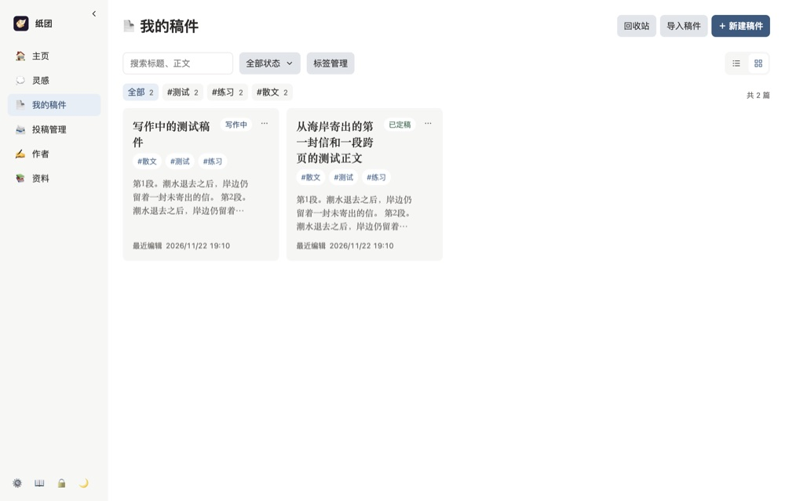

纸团 Paperball


1 / 2 · 我的稿件界面
项目介绍
纸团把写作和投稿放在同一个工作区。作者可以从一篇稿件出发，回看它投过哪些刊物、何时投出，以及最近一次投递。
主要功能
- 写作与定稿：整理草稿、导入已有文稿，并在阅读模式下检查定稿排版。
- 邮件投稿：选择定稿和投稿对象，填写邮件并发送，也可以先存为草稿。
- 投递记录：在其他渠道投出的稿件也能手动登记，按稿件或投递时间回查。